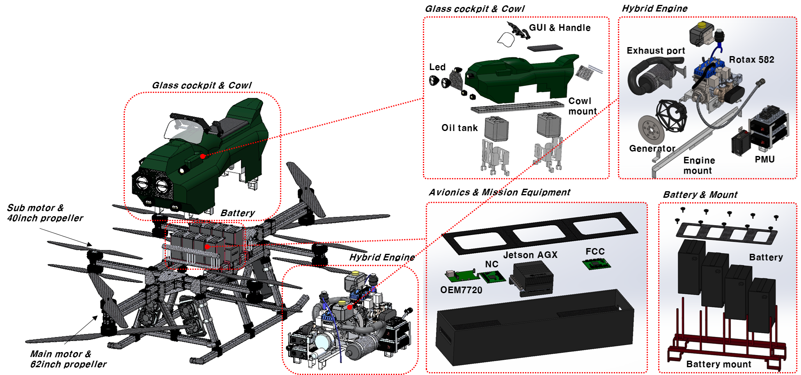

INTELLIGENT UAV SYSTEMS · SYSTEM DESIGN · GNC · ONBOARD AI
장광우 Kwangwoo Jang, Ph.D.
Research Engineer · 한국전자통신연구원 (ETRI)
시스템 설계에서 실제 비행실증까지 이론과 구현을 연결하는 무인항공기 연구자
저는 실제 항공시스템에서 발생하는 문제를 이론적으로 분석하고, 그 해결책을 다시 실제 비행체에 구현·검증하는 연구를 지향합니다. 비행체 동역학과 제어를 기반으로 자율비행 및 온보드 AI까지 연구영역을 확장해 왔으며, 국방용 Hoverbike 개발에서는 시스템 요구사항 정의부터 설계, 통합 및 최종 성능평가까지 개발 전 과정을 총괄했습니다.
실제 무인항공기의 성능은 개별 알고리즘뿐 아니라 시스템 요구사항과 하위 기술 간 상호작용에 의해 결정됩니다.
저는 실제 비행체에서 확인한 문제를 이론적으로 분석하고, 그 해결책을 시스템 설계에 반영한 후 HILS와 반복 비행시험으로 검증하는 연구를 지향합니다. Hoverbike 개발에서 수행한 설계검토와 성능평가 경험을 토대로 제어·AI 기술을 모듈형 항전플랫폼에 통합하여 설계–통합–검증을 연결하는 지능형 UAV 연구체계를 구축하고자 합니다.
DEFINE REQUIREMENTS→INTEGRATE GNC & AI→VALIDATE IN REAL FLIGHT
FACULTY APPLICATION PORTFOLIORESEARCH PLAN
DETAILED RESEARCH PLAN · SEJONG UNIVERSITY
시스템 중심의 세 가지 중점 연구
모듈형 무인항공기 플랫폼을 중심으로 제어·AI 통합 및 비행실증을 추진합니다.
01
INTEGRATED UAV SYSTEMS & DESIGN
기체·항전·제어를 연결하여 실제 시스템에서 검증
RESEARCH OBJECTIVE
시스템 요구사항을 기반으로 센서·항법, 비행컴퓨터, 온보드 AI, 통신, 추진 및 기체 하드웨어를 모듈화하고 실시간으로 연동합니다.
METHOD & EXPANSION
Hoverbike SRR–PDR–CDR–TRR 경험을 바탕으로 모듈형 FC/AI 항전플랫폼을 구축하고, SILS–HILS–실비행에 공통 SW를 적용하여 UAV/eVTOL로 확장합니다.
INTEGRATION PROCESS
System Requirements↓FC / AI + GNC↓SILS → HILS → Flight

Hoverbike system integration
02
ROBUST & UNCERTAINTY-AWARE GNC
미지 동역학을 추정하고 제어에 반영
RESEARCH OBJECTIVE
돌풍·공력 및 탑재조건 변화로 발생하는 미지 동역학과 외란을 비행 중 온라인으로 추정하고, 그 불확실성을 제어와 유도에 실시간 반영합니다.
METHOD & EXPANSION
PIPE 기반 추정값과 추정 불확실성을 함께 정량화하고 adaptive/robust control 및 MPPI의 비용함수·제약조건과 결합합니다. 틸트로터 천이비행 제어로 적용범위를 확장합니다.
초기 연구성과를 신규 과제의 예비성과로 연결하고, 독립 연구와 실증 공동연구를 병행합니다.
PUBLICATION PIPELINE
연차별 논문·연구개발 성과
게재 목표 · SCIE 5 · KCI 3
YEAR 1SCIE 2편 · KCI 1편
기존 성과의 조기 논문화와 공통 플랫폼 구축
SCIE TAFM 기반 생성형 유도정책
SCIE Depth Camera–MPPI 확률적 경로계획
KCI 모듈형 FC/AI 항전시스템 설계·HILS 구조·인터페이스·실시간성
R&D OUTPUT 모듈형 UAV·HILS 초기 구축
YEAR 2SCIE 3편 · KCI 2편
불확실성·적응제어·안전 자율비행 후속연구
SCIE PIPE 추정 불확실성 확장
SCIE 틸트로터 공력추정·적응 천이제어
SCIE 온보드 AI 기반 안전 자율비행
KCI UAV 영상·메타데이터 실시간 처리 동기화·지연·연산성능
KCI 지형 위험도 기반 자동착륙 착륙구역·정확도·시뮬레이션
R&D OUTPUT 온보드 AI·GNC 통합 비행검증
성과관리 원칙 게재 목표보다 넓은 투고 후보군을 확보하고, 원고 준비·심사 일정에 따라 연차별 배분을 조정합니다. 기존 기관 연구는 공동저자·데이터 사용권·발표범위를 확인한 후 활용합니다.
EXTERNAL RESEARCH FUNDING
다섯 가지 수주 경로와 제안 포트폴리오
수주 목표 3.0억 원
01
NRF 개인기초연구
온라인 공력추정·불확실성 대응 GNC
독립 연구과제 · UAV/HILS2.0억02
산림청 수요 연계 산학연 공동연구
산불 대응 UAV·안전착륙·온보드 AI
수요 연계 · 산학연 구성1.5억03
항공 AI 관련 국가R&D 공동연구
항공 AI 안전성·신뢰성 및 시스템 검증
국가R&D · 컨소시엄2.0억04
항전·AI 관련 기업 공동개발
모듈형 항전·임무컴퓨터·UAV 통합
기업 공동개발 · 역할 분담1.2억05
소규모 위탁·실증연구
알고리즘 성능평가 및 HILS 검증
단기 실증 → 후속 공동연구0.8억
2년간 제안 추진 규모7.5억 원5개 수주 경로→외부 연구비 수주 목표3.0억 원개인기초 2억 + 독립 세부과제 1억→추가 공동연구 확보 시4.0억 원도전
기존 산학연 협력 및 연구기획 경험을 바탕으로 향후 2년간 세종대 배정액 기준 총 7.5억 원 규모의 연구과제 제안을 추진하고, 이 중 3억 원 이상의 외부 연구비 확보를 목표로 합니다. 개별 사업의 공고 및 참여조건에 따라 제안 규모를 조정하며, 추가 공동연구 확보 시 4억 원까지 확대하겠습니다.
01 · YEAR 1개인기초·수요 확인→02역할·예산 설계→03초기성과·HILS 연계→04 · YEAR 2국가R&D·실증 확대
연구비 집계·수행 원칙 개인기초연구와 세종대가 연구책임 또는 독립적인 세부과제 책임을 맡는 산학연 공동연구를 병행하고, 학교의 연구책임자 인정 기준에 부합하는 배정액만 수주 실적으로 산정합니다. 세종대의 알고리즘 개발, 온보드 AI·항전 통합 및 HILS·비행검증 범위와 예산은 독립적으로 구성하며, 기술분과위원회 경험은 특정 사업과의 연계가 아닌 국가R&D 기획·제안 역량으로 활용합니다.
INTELLIGENT UAV SYSTEMS & DESIGN LABORATORY실제 문제에서 출발해 설계·통합·비행검증까지 연결하는 지능형 무인항공기 연구·교육 거점을 구축하겠습니다.